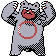

#385
Ursaring
NormalGround
Abilities: Guts, Quick Feet, Unnerve
Base stats BST 500
HP90
Attack75
Defense75
Speed55
Sp. Atk130
Sp. Def75
Evolution
dbbw EVOLVE_LEVEL, 42, URSALUNAdbbw EVOLVE_LEVEL, 42, URSALUNABMLevel-up learnset
LevelMoveType
Lv. 1CharmNormal
Lv. 1LickGhost
Lv. 1LeerNormal
Lv. 1ScratchNormal
Lv. 1ScratchNormal
Lv. 1LeerNormal
Lv. 1LickGhost
Lv. 6Fury SwipesNormal
Lv. 8Fury SwipesNormal
Lv. 15Sweet ScentNormal
Lv. 15Faint AttackDark
Lv. 17BulldozeGround
Lv. 17Sweet ScentNormal
Lv. 18Metal ClawSteel
Lv. 21Scary FaceNormal
Lv. 22SlashNormal
Lv. 24SlashNormal
Lv. 24Night SlashDark
Lv. 29Play RoughFairy
Lv. 31Cross ChopFighting
Lv. 35RestPsychic
Lv. 35EarthquakeGround
Lv. 35Scary FaceNormal
Lv. 39CrunchDark
Lv. 41SnoreNormal
Lv. 41RestPsychic
Lv. 41SnoreNormal
Lv. 43ThrashNormal
Lv. 51Play RoughFairy
Lv. 55Close CombatFighting
Lv. 56ThrashNormal
Lv. 59Double-EdgeNormal